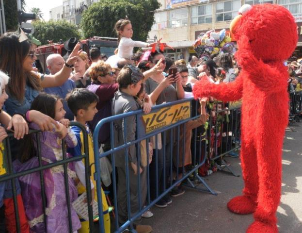
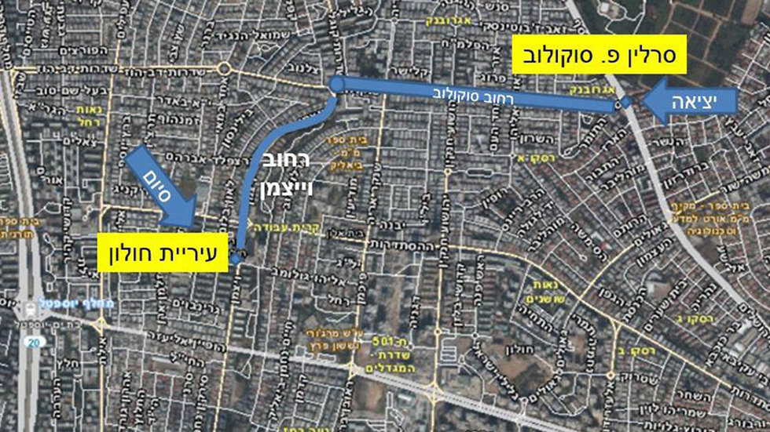

העדלאידע
תהלוכת פורים הגדולה במדינה מתקיימת מידי שנה בעיר חולון והיא מהווה שיאה של פעילות קהילתית וארגונית המתרחשת במהלך השנה ומתעצמת לקראת החג. בתהלוכה, אשר מתמקדת בכל פעם בנושא מרכזי שונה, נוטלים חלק אלפי צועדים, ביניהם: תלמידי בתי הספר בחולון, משתתפי החוגים במרכזים הקהילתיים ובמרכזי התרבות והספורט, להקות של מתעמלים, פעלולנים ואקרובטים, קבוצות מנגנים ורקדנים, קבוצות תיאטרון רחוב, וכמובן מיצגי ענק ססגוניים, המהווים את החלק המרגש והמרשים במיוחד. לצד הצועדים מחולון משתתפים בעדלאידע צועדים אורחים מרחבי הארץ ולעיתים אף מהעולם. העדלאידע צועדת לאורך רחובותיה המרכזיים של חולון לעיני מאות אלפי צופים מכל הגילאים. לרוב מסתיימת הצעדה במופע ובמסיבת רחוב צבעונית ועליזה במיוחד ברחבה שמול העירייה. מתום העדלאידע ועד לסיום חג הפורים מוצבים ברחבת המדיטק המיצגים שהשתתפו בתהלוכה להנאת העוברים והשבים.
עדלאידע חולון פורים 2022
מסלול העדלאידע בחולון בשנים הקודמות נע במרכז העיר ועבר מול רחבת העירייה אבל עדיין לא צריך לתפוס מקומות… מהעייריה עדיין לא נמסר מה יהיה נושא העדלאידע השנה, אז אולי יש לכם רעיונות להציע להם? ראש העיר מוטי ששון: “העדלאידע של חולון, שצועדת כבר קרוב ל-3 עשורים, היא סמל בשגרת הפורים של ילדי העיר וילדי ישראל. מגיע לילדים שלנו לחוות שוב את שמחת פורים כמו שצריך. בפורים הקרוב תהיה העיר חולון צוהלת ושמחה!”
מסלול הדלאידע


